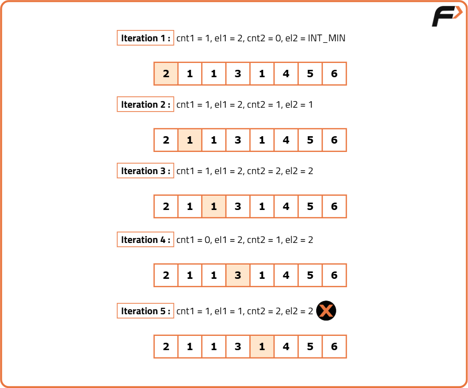

Majority Elements(>N/3 times) | Find the elements that appears more than N/3 times in the array
Problem Statement: Given an integer array nums of size n. Return all elements which appear more than n/3 times in the array. The output can be returned in any order.
Examples
Example 1: Input: nums = [1, 2, 1, 1, 3, 2] Output: [1] Explanation: Here, n / 3 = 6 / 3 = 2. Therefore, the elements appearing 3 or more times are: [1]. Example 2: Input: nums = [1, 2, 1, 1, 3, 2, 2] Output: [1, 2] Explanation: Here, n / 3 = 7 / 3 = 2. Therefore, the elements appearing 3 or more times are: [1, 2].
Disclaimer: Here is the practice link to help you assess your knowledge better. It's highly recommend trying to solve it before looking at the solution.
Brute Force
Algorithm
- Can there be more than 2 majority elements?
- To understand why there can't be more than two majority elements (elements that appear more than n/3 times) in an array of size n, let's consider the following reasoning:
- A majority element must appear more than n/3 times. Let’s assume there are more than two majority elements, say A, B, and C.
- The combined frequency of these three elements would be: frequency of A + frequency of B + frequency of C > n/3 + n/3 + n/3 = n.
- Since the total occurrences of all elements cannot exceed n (the size of the array), the combined frequency of any three elements each appearing more than n/3 times would exceed the total size of the array, leading to a contradiction.
- Therefore, it is mathematically impossible to have more than two elements that each appear more than n/3 times in the array.
- Approach:
- Iterate through the array and select each element one by one.
- For each unique element, run another loop to count its occurrences in the array.
- If any element occurs more than floor(N/3) times, include it in the result array.
- If a previously included element is found during traversal, skip it to avoid counting duplicates.
- If the result array already contains 2 elements, break out of the loop, as there can’t be more than two majority elements.
- Return the result array containing the majority elements or return -1 if no such element is found.
Code
#include <bits/stdc++.h>
using namespace std;
class Solution {
public:
// Function to find majority elements in an array
vector<int> majorityElementTwo(vector<int>& nums) {
// Size of the array
int n = nums.size();
// List of answers
vector<int> result;
for (int i = 0; i < n; i++) {
/*Checking if nums[i] is not
already part of the answer*/
if (result.size() == 0 || result[0] != nums[i]) {
int cnt = 0;
for (int j = 0; j < n; j++) {
// counting the frequency of nums[i]
if (nums[j] == nums[i]) {
cnt++;
}
}
// check if frquency is greater than n/3:
if (cnt > (n / 3))
result.push_back(nums[i]);
}
//if result size is equal to 2 break out of loop
if (result.size() == 2) break;
}
//return the majority elements
return result;
}
};
int main() {
vector<int> arr = {11, 33, 33, 11, 33, 11};
// Create an instance of Solution class
Solution sol;
vector<int> ans = sol.majorityElementTwo(arr);
// Print the majority elements found
cout << "The majority elements are: ";
for (auto it : ans) {
cout << it << " ";
}
cout << "\n";
return 0;
}Complexity Analysis
Time Complexity: O(N^2), where N is the size of the array. This is because for each element, we are traversing the entire array to count its occurrences.
Space Complexity: O(1), as we are using a constant amount of space for the result array, which can hold at most 2 elements.
Better Approach
Algorithm
- Use a hashmap (or a frequency array if the array size is small) to store the elements as key-value pairs, where the key is the element and the value is the number of times it occurs in the array.
- Traverse the entire array, updating the occurrences of each element in the hashmap.
- After the traversal, check the hashmap to see if any element's value (frequency) is greater than the floor of N/3. If it is, include the element in the answer array.
- If the size of the answer array reaches 2, break out of the loop, as there cannot be more than two majority elements.
- Finally, return the answer array containing the majority elements. If no such elements are found, return -1.
Code
#include <bits/stdc++.h>
using namespace std;
class Solution {
public:
// Function to find majority elements in an array
vector<int> majorityElementTwo(vector<int>& nums) {
// size of the array
int n = nums.size();
// list of answers
vector<int> result;
// declaring a map
unordered_map<int, int> mpp;
// least occurrence of the majority element
int mini = int(n / 3) + 1;
// storing the elements with its occurrence
for (int i = 0; i < n; i++) {
mpp[nums[i]]++;
// checking if nums[i] is the majority element
if (mpp[nums[i]] == mini) {
result.push_back(nums[i]);
}
// if result size is equal to 2 break out of loop
if (result.size() == 2) {
break;
}
}
// return the majority elements
return result;
}
};
int main() {
vector<int> arr = {11, 33, 33, 11, 33, 11};
// Create an instance of Solution class
Solution sol;
vector<int> ans = sol.majorityElementTwo(arr);
// Print the majority elements found
cout << "The majority elements are: ";
for (auto it : ans) {
cout << it << " ";
}
cout << "\n";
return 0;
}Complexity Analysis
Time Complexity: O(N * logN), where N is the size of the given array. For using a map data structure, where insertion in the map takes logN time, and we are doing it for N elements. So, it results in the first term O(N * logN). On using unordered_map instead, the first term will be O(N) for the best and average case, and for the worst case, it will be O(N2).
Space Complexity: O(N) for using a map data structure. A list that stores a maximum of 2 elements is also used, but that space used is so small that it can be considered constant.
Optimal Approach
Algorithm
- Initialize four variables:
cnt1andcnt2for tracking the counts of elements, andel1andel2for storing the potential majority elements. - Traverse through the given array:
- If
cnt1is 0 and the current element is not equal toel2, setel1to the current element and incrementcnt1by 1. - If
cnt2is 0 and the current element is not equal toel1, setel2to the current element and incrementcnt2by 1. - If the current element is equal to
el1, incrementcnt1by 1. - If the current element is equal to
el2, incrementcnt2by 1. - In all other cases, decrease
cnt1andcnt2by 1. - After processing all elements,
el1andel2should be the candidate elements for majority. To confirm: - Use another loop to manually check the counts of
el1andel2in the array. - If either
el1orel2's count is greater thanfloor(N/3), it is considered a valid majority element.

Code
#include <bits/stdc++.h>
using namespace std;
class Solution {
public:
// Function to find majority elements in an array
vector<int> majorityElementTwo(vector<int>& nums) {
// Size of the array
int n = nums.size();
// Counts for elements el1 and el2
int cnt1 = 0, cnt2 = 0;
/*Initialize Element 1 and
Element 2 with INT_MIN value*/
int el1 = INT_MIN, el2 = INT_MIN;
/*Find the potential candidates using
Boyer Moore's Voting Algorithm*/
for (int i = 0; i < n; i++) {
if (cnt1 == 0 && el2 != nums[i]) {
cnt1 = 1;
// Initialize el1 as nums[i]
el1 = nums[i];
}
else if (cnt2 == 0 && el1 != nums[i]) {
cnt2 = 1;
// Initialize el2 as nums[i]
el2 = nums[i];
}
else if (nums[i] == el1) {
// Increment count for el1
cnt1++;
}
else if (nums[i] == el2) {
// Increment count for el2
cnt2++;
}
else {
// Decrement count for el1
cnt1--;
// Decrement count for el2
cnt2--;
}
}
//Validate the candidates by counting occurrences in nums
//Reset counts for el1 and el2
cnt1 = 0, cnt2 = 0;
for (int i = 0; i < n; i++) {
if (nums[i] == el1) {
// Count occurrences of el1
cnt1++;
}
if (nums[i] == el2) {
// Count occurrences of el2
cnt2++;
}
}
/* Determine the minimum count
required for a majority element*/
int mini = n / 3 + 1;
// List of answers
vector<int> result;
/*Add elements to the result vector
if they appear more than n/3 times*/
if (cnt1 >= mini) {
result.push_back(el1);
}
if (cnt2 >= mini && el1 != el2) {
// Avoid adding duplicate if el1 == el2
result.push_back(el2);
}
// Uncomment the following line if you want to sort the answer array
// sort(result.begin(), result.end()); // TC --> O(2*log2) ~ O(1);
//return the majority elements
return result;
}
};
int main() {
vector<int> arr = {11, 33, 33, 11, 33, 11};
// Create an instance of Solution class
Solution sol;
vector<int> ans = sol.majorityElementTwo(arr);
// Print the majority elements found
cout << "The majority elements are: ";
for (auto it : ans) {
cout << it << " ";
}
cout << "\n";
return 0;
}Complexity Analysis
Time Complexity: O(N), where N is the size of the input array. We traverse the array twice: once to find potential candidates and once to validate them.
Space Complexity: O(1), as we are using a constant amount of space for the counters and candidate elements, regardless of the input size.